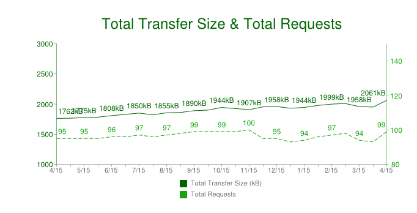
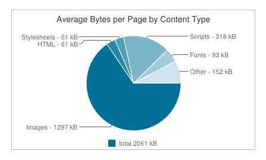

High Perf JS
goo.gl/0JIpFe
JS Dude / @mdkhan005
www.thatJSdude.com
(youtube.com/user/khanLearning)why performance

Performance improvement


Where to start
Page Load
response
- gZip
- CDN
httpArchive.org
content type
- compress
- sprite
- lazy loading
- font-icon, css icon
- svg, Data
scripts and styles
- Minify
- Combine
- cache
- CDN
- async and defer
- dynamic loading
Development
use framework

be smartly lazy

blame framework but take credit
Magic
Magic in Angular
- Compilation phase
- Runtime phase
Compilation Phase
<input ng-model="name">
- input with ng-model becomes angular directive
- Setup a keydown listener to input
- Something in angular named: $interpolation
- interpolation: markup with expression => string
- interpolation setup a $watch in current scope
- $watch will be notified if "name" changes
{{name}}
$compile vs $interpolate vs $parse
Runtime Phase
- When you press 'X'
- Browser emits a keydown event on input
- input directive captures change
- calls $apply("name = 'X';") to update model
- Angular applies the name = 'X'; to the model
- The $digest loop begins
- $watch list detects change notifies $interpolation
- $interpolation updates the DOM by $parse
- angular finishes keydown event
- browser render new text
scope performance considerations
There is no Magic
- Productivity could harm performance
- Don't be amazed by magic
- Do you really need magic?
- All of it or some?
- What is the cost of magic?
- Is it worth to take the overhead?
Array

Create Array
var a = new Array(); //[]
var b = new Array(3);//[undefined, undefined, undefined]
var c = new Array(5, 6, 7);// [5, 6, 7]
[]; //literals
var d = [5, 6, 7];
push vs assign
var a = [];
for (var i = 0; i < 10000; i++){
a.push(i);
}
var b = [];
for (var i = 0; i < 10000; i++){
b[i] = i;
}
Push multiple
var a = [1, 2];
a.push(3, 4, 5);
a; // [1, 2, 3, 4, 5]
indexOf Extra Parameter
var b = [1, 2, 3, 4, 5, ...];
b.indexOf(669);
b.indexOf(669, 500);
b.lastIndexOf(169, 500);
filter vs if
var devs = [{ name: 'addy osmani', age: 29}, {name: 'paul irish', age:31}, {name: 'js dude', age: 13}];
devs.filter(function (el, i, arr) {
return el.age > 21;
});
function filterByForLoop(myArr, num){
var i = 0, j = 0, len, output=[];
for (i = 0, len = myArr.length; i < len; i ++) {
if (myArr[i].age > 21) {
output[j++]= myArr[i];
}
}
return output;
}native gives u option
- [] is faster than new Array()
- a[index] is faster a.push
- push can insert multiple
- consider fromIndex if possible
Scope

JavaScript Scope
- Global scope
- local scope


global scope
var a = 2;
function b(){
console.log(a);
} 
Local Scope


local/function scope
function foo(){
var d = 21;
console.log(d);
}
foo(); //21
console.log(d); //ReferenceError: d is not defined
JS scope chain

store out of scope variable
var myArr = [0, 1, 2,3 4, 5 ...];
function useGlobal() {
for (var j = 0; j < 10000; j++){
console.log(myArr[j]);
}
}
function useLocal() {
var localArr = myArr;
for (var k = 0; k < 10000; k++){
console.log(localArr[k]);
}
}
is it hard to
Improve
Performance?


Events


w3: event flow (image)
event delegate
<ul id="listToDestroy">
<li><a href="#">first item</a></li>
<li><a href="#">second item</a></li>
<li><a href="#">third item</a></li>
<li><a href="#">forth item</a></li>
<li><a href="#">Fifth item</a></li>
</ul>
var el = document.getElementById('listToDestroy');
el.addEventListener('click', function (e) {
var list = e.target.parentNode;
list.parentNode.removeChild(list);
e.preventDefault();
});
event delegate (demo)
security guard
Debounce & Throttle
Defer
Debounce: Example
You might not need
JQuery
Are you ready?
$(document).ready(function () {
console.log('document is ready. I can sleep now');
});Script as Last Tag of body
document.addEventListener('DOMContentLoaded', function(){
console.log('document is ready. I can sleep now');
});
document.onreadystatechange = function () {
if (document.readyState == "complete") {
console.log('document is ready. I can sleep now');
}
}Copy ready: function from JQuery
5-things-you-should-stop-doing-with-jquery$
$('#myId');
$('.myClass');
$('div p');
document.querySelectorAll('#myId');
document.querySelectorAll('.myClass');
document.querySelectorAll('div p');
querySelctorAll dont have map, each, filter
var nodes = document.querySelectorAll('.myClass');
//convert nodeList to array
var nodesArray = [].slice.call(nodes);
deal with class
$(el).addClass('hide');
$(el).removeClass('hide');
$(el).toggleClass('hide');
$(el).hasClass('hide');
//IE9+
el.classList.add('hide');
el.classList.remove('hide');
el.classList.toggle('hide');
el.classList.contains('hide');
jQuery helpers
$(el).hide();
$(el).show();
el.style.display = 'none';
el.style.display = '';
$(el).html();
$(el).html(setString);
$(el).empty();
el.innerHTML;
el.innerHTML = setString;
el.innerHTML = '';
$(el).text();
el.textContent;event listener
$(el).on(eventName, eventHandler);
$(el).on('click', function(e){
console.log(e.target);
});
//IE9+
el.addEventListener(eventName, eventHandler);
el.addEventListener('click', function(e){
console.log(e.target);
});
//remove event
$(el).off(eventName, eventHandler);
el.removeEventListener(eventName, eventHandler);
DOM manipulation
$(el).parent();
$(el).children();
$(el).next();
$(el).prev();
$(parent).append(el);
$(el).remove();
el.parentNode;
el.children;
el.nextElementSibling;
el.previousElementSibling
parent.appendChild(el);
el.parentNode.removeChild(el);
is JQuery Dead?
- Older Browser
- Browser Bugs
- Angular, Backbone uses Jquery
- lazy (dont want to learn new framework)
- Is JQuery too big for mobile device
Decide based on your situation
Frameworks
angular
- bind once or one time binding
- prefer filter in the controller
- pagination, limitTo, track by
- $destroy, unbindwatch
- prefer digest over apply
- Everything doesnt have to be angular
React JS
- No two way bindings
- use virtual DOM
- difference algorithm
- update only the changes
- ng-react
How to improve Perf
Strategy?
- Understand the situation/ use case
- Is it a performance/ design problem?
- Don't blindly go for blog/ talk/ boss
- Or some random guy in a conference
- Measure it (before, after)
- Make sure u understand after 6 months


Performance Test
Ways to test
- chrome task manager (shift + Esc)
- devtool - audit, network
- jsPerf.com show popular
- Devtool- Console, timeline, profile
Console API
console.assert(myArray.length >5, "More than 5 elements");
function foo(){
console.count('fooed');
}
foo(); // fooed: 1
foo(); // fooed: 2
foo(); // fooed: 3
console.time("Array initialize");
//your code
console.timeEnd("Array initialize");
Console API
Use tool like
- page speed
- webpagetest.org
Memory Profiling
must watch: advanced performance tooling JS Memory ProfilingLong paint times profiling
Effective Memory management
Leak Finder
so far


High Perf JavaScript
- local variable is faster than out-of scope variable
- reverse while is the fastest to iterate array
- delegate Events
- consider throttle and debounce
- Do u really need full Jquery or some module?
- devTool- audit, profile, timeline, console
Break Everything
I have said
\
/
Build you own rules, and update old ones.
Break All the Rules
Final Take Away
- Nothing is absolutely right
trust Tools, not Rules
Angus Croll: Break all the rules

Free Tips
Appear Busy at Work
- Ctrl + 1 when big brother is around
- Always carry extra bag and print out
- don't leave before ur manager
- Dont use the same rest room in a row
- Do lunch at your desk not break room
- always leave a extra jacket on your chair
- compose email during office hours, send it midnight or weekends
Look busy
Thank You
goo.gl/0JIpFe
JS Dude / @mdkhan005
www.thatJsDude.com

www.thatJsDude.com
(JS Dude / @mdkhan005)